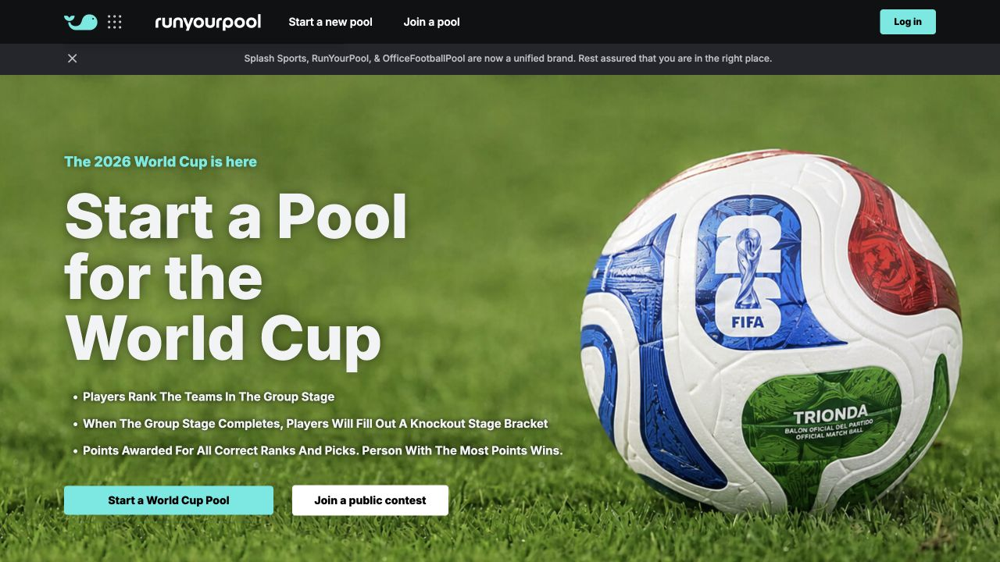

RunYourPool
Seasonal, social sports pools with a World Cup campaign and an optional cash-contest path.
- Leads with a World Cup group-ranking plus knockout-bracket pool.
- Claims 1M+ users and covers NFL, college basketball, golf, NBA, MLB, NHL, soccer, Olympics, and awards.
- Promotes easy setup, free first week, configurable scoring, online picks, automatic deadlines, live standings, reporting, and a message board.
- Frames cash collection and winner payouts as part of its Splash flow.